Galeria
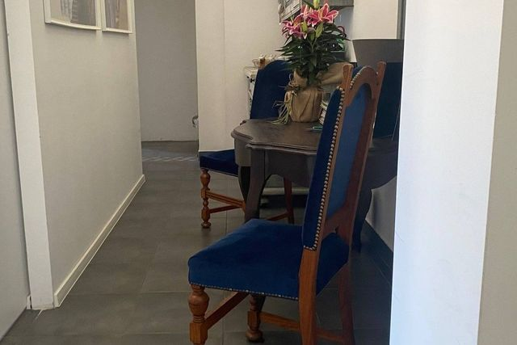
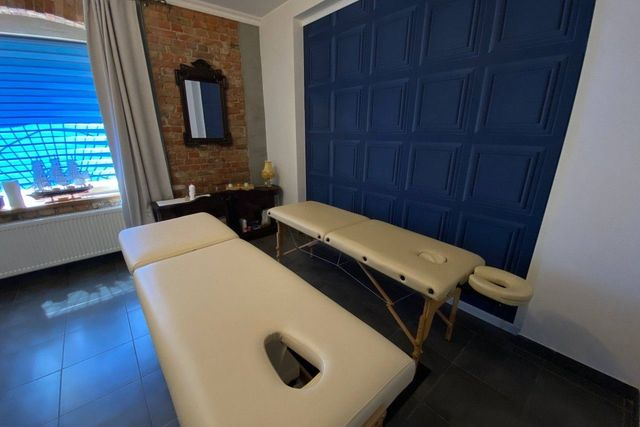
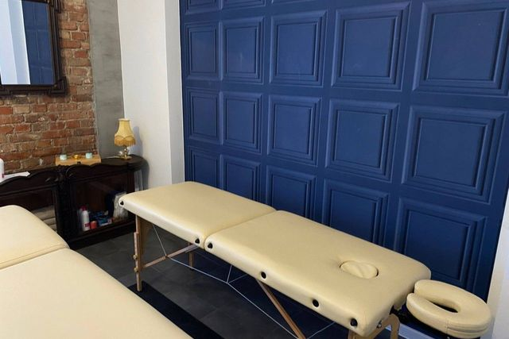
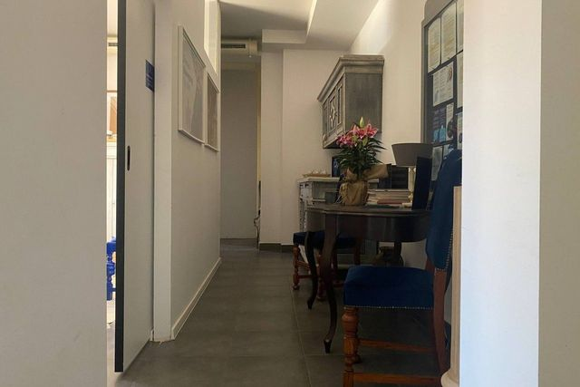
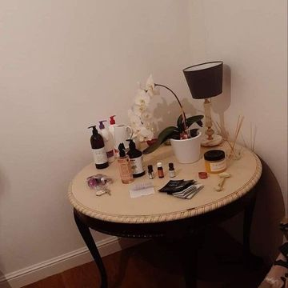
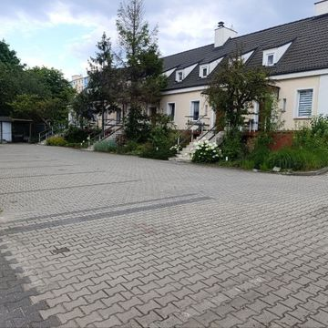
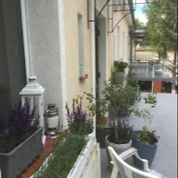
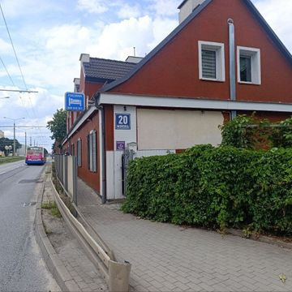
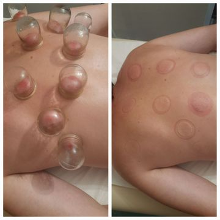
 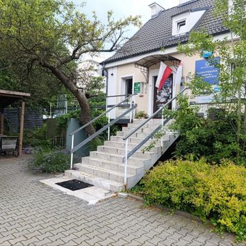
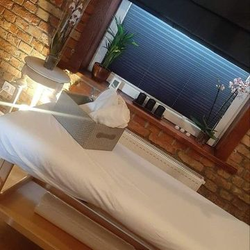
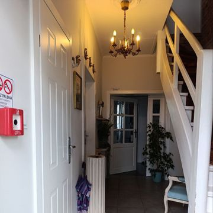
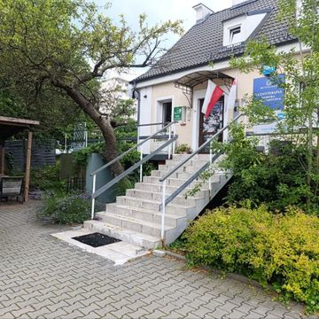
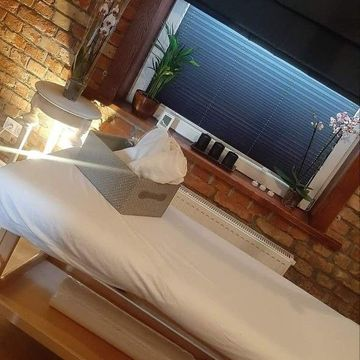
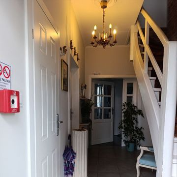
 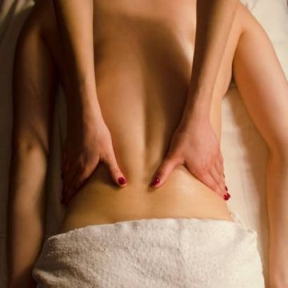
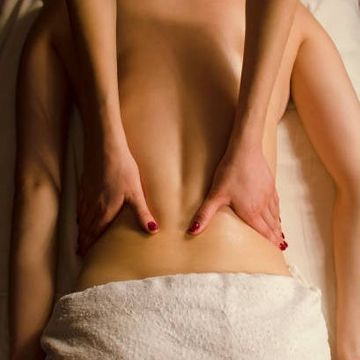
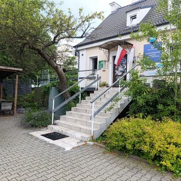
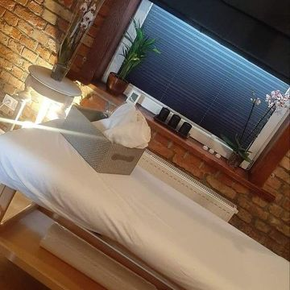
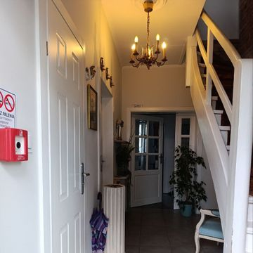
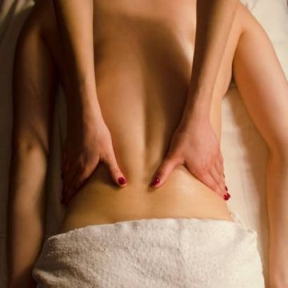
Twój Masażysta to miejsce, gdzie profesjonalizm spotyka się z prawdziwym relaksem. Salon wyróżnia się indywidualnym podejściem do klienta, przyjazną atmosferą oraz wysokim poziomem umiejętności masażystów. To idealne miejsce, aby pozbyć się napięcia i bólu, odzyskać siły oraz poczuć prawdziwą troskę o swoje ciało. Doskonały wybór zarówno dla relaksu, jak i dla wsparcia zdrowia.
To specjalny masaż, który pomaga, gdy coś boli - np. plecy, szyja albo ramiona. Masażysta uciska i rozciera napięte miejsca, żeby ból minąłi ciało poczuło się lepiej. Działa jak lekarstwo - ale przez dotyk.
Ten masaż jest tylko na plecy – kiedy są zmęczone, obolałe albo sztywne. Pomaga rozluźnić mięśnie, żeby było łatwiej się ruszać i nie bolało, np. po pracy przy biurku albo stresie.
Masaż dla dwóch osób w tym samym czasie i pokoju. Idealny na randkę, prezent albo wspólny relaks.
Zbalansowana regeneracja dla całego ciała. Łączy relaks i działanie lecznicze – klasyka, która nigdy nie zawodzi.
Zadbaj o swoje plecy – zniweluj ból i napięcia, odzyskaj lekkość w ciele. Skoncentrowany relaks dla przeciążonych pleców. Doskonały po długim dniu pracy.
Odprężenie zaczyna się od stóp! Masaż, który przynosi ulgę całemu ciału.
Kompleksowy zabieg łączący klasyczny masaż całego ciała z relaksującym masażem twarzy. Doskonały wybór dla osób szukających odprężenia, redukcji napięć mięśniowych oraz poprawy kondycji skóry. Ciało odpoczywa – twarz promienieje. 🌿✨
Luksusowy zabieg, który wygładza, rozświetla i relaksuje. Twoja twarz Ci podziękuje!
Usuń toksyny, zlikwiduj obrzęki, poczuj się lekko i świeżo!
Dla aktywnych i sportowców – regeneracja, która przyspiesza powrót do formy.
Masaż wspomagający regenerację mięśni z techniką poizometrycznej relaksacji, która skutecznie rozluźnia głęboko napięte partie ciała. Idealny dla osób aktywnych fizycznie, po treningu lub w celu poprawy zakresu ruchu i elastyczności mięśni.
Ciepło kamieni w połączeniu z dotykiem – głęboki relaks i rozluźnienie mięśni.
Masaż skóry głowy, karku i ramion. Pomaga na stres, bóle głowy i napięcia. Działa też dobrze na włosy.
Delikatny, płynny masaż inspirowany hawajską techniką Lomi Lomi. Wprowadza w głęboki stan relaksu, redukuje stres i napięcia w ciele. Długie, rytmiczne ruchy ramion i dłoni otulają ciało, przywracając harmonię duszy i ciała. Idealny na wyciszenie po intensywnym dniu.
Masaż przy użyciu specjalnych gumowych baniek. Działa intensywnie – pomaga na cellulit, bóle pleców i napięcia.
Masaż dla dwóch osób w tym samym czasie i pokoju. Idealny na randkę, prezent albo wspólny relaks.
Ciepły olejek ze świecy wmasowywany w ciało. Bardzo relaksujący i pachnący – jak rytuał spa.
Relaksujący masaż z użyciem pachnących olejków. Ciało odpoczywa, a zapachy koją zmysły.
Specjalny masaż punktów na stopach, które wpływają na całe ciało. Relaksuje i pomaga w różnych dolegliwościach.
Poczuj głęboki spokój i odprężenie. Idealny, by oderwać się od stresu i napięć codziennego życia.
Naturalny detoks i regeneracja skóry. Masaż miodem działa oczyszczająco, poprawia krążenie i odżywia ciało dzięki właściwościom antybakteryjnym i nawilżającym miodu. Idealny dla osób zestresowanych, z przemęczoną skórą i napięciem w ciele. Skóra staje się gładka, jędrna i pełna blasku.
Kompliacia różnych rodzaji masażu podczas jedneg zabieg dostosowane do potrzeb organizmu pacjent. Masaż dopasowany do Ciebie. Masażysta wybiera najlepsze techniki, by pomóc Twojemu ciału dokładnie tam, gdzie trzeba.
Pakiety i promocje – zapytaj telefonicznie
Bardzo polecam! Po masażu czuję się znacznie lepiej i mam więcej energii.
Profesjonalizm i świetna atmosfera. Na pewno wrócę!
Dziękuję za indywidualne podejście. Masaż na najwyższym poziomie.
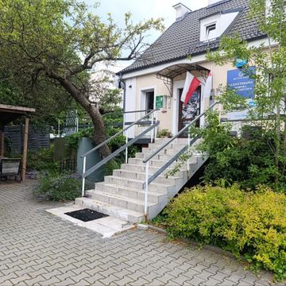
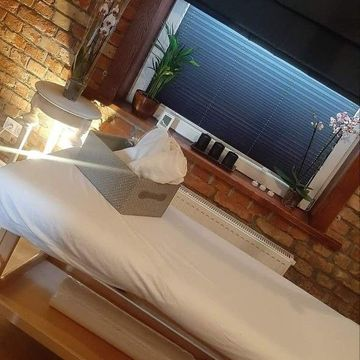
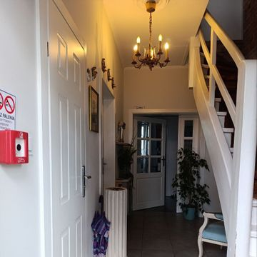
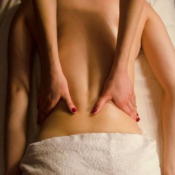
Adres: ul. Morska 20, Gdynia
Godziny pracy: Pon-Ned 10:00-21:30
Telefon: 519 384 960
Email: ✉️ gdyniatwojmasazysta@gmail.com